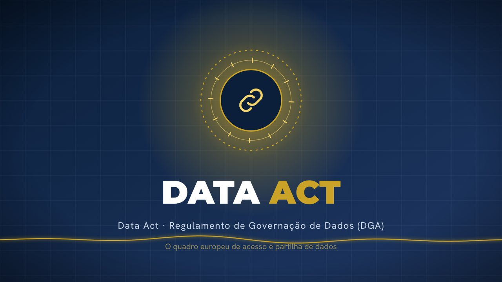

ARG
ARGARGOS › As normas em 4 minutos › Data Act e DGA
Data Act e DGA em 4 minutos: Portugal: obriga, mas falta quem fiscalize
O Data Act e o Regulamento de Governação de Dados formam o quadro europeu de acesso e partilha de dados. O dado industrial já não pertence, por defeito, ao fabricante. Em Portugal, o regulamento obriga, mas falta quem o fiscalize.

- 0:00De quem?
- 0:12O regulamento
- 0:31Em Portugal
- 0:50Data Act
- 1:01Obrigações
- 1:22A DGA
- 1:39Datas
- 2:00Europa
- 2:22O juiz
- 2:41O que fazer
Dados-chave
- 12.9.2025 em toda a União Europeia
- 24.9.2023 aplica-se a DGA
- 12.9.2025 aplica-se o Data Act
- 12.9.2026 acesso desde a conceção
- 12.1.2027 fim dos custos de mudança de nuvem
- Sem autoridade Para o Data Act
- Sem coimas Sem autoridade, não há sanções
- CNPD Só dados pessoais
Transcrição
Texto completo da locução
0:00 · De quem?
O teu trator produz dados. As tuas máquinas também. O teu elevador, o teu carro, o teu contador. Mas é o fabricante que os guarda. De quem são, afinal?
0:12 · O regulamento
O Regulamento Europeu dos Dados, o Data Act, aplica-se em toda a União desde 12 de setembro de 2025. Quem usa um produto conectado pode aceder gratuitamente aos seus dados, e partilhá-los. E desde 12 de janeiro de 2027, nenhum fornecedor de nuvem pode cobrar a saída.
0:31 · Em Portugal
Em Portugal, o regulamento obriga, mas falta quem o fiscalize. Não há autoridade designada para o Data Act. Sem autoridade, não há coimas. A CNPD vigia só os dados pessoais. Os direitos já se podem exigir nos tribunais. E a ANACOM já é autoridade da DGA.
0:50 · Data Act
O Data Act e o Regulamento de Governação de Dados formam o quadro europeu de acesso e partilha de dados. O dado industrial já não pertence, por defeito, ao fabricante.
1:01 · Obrigações
O que exige ao fabricante. Desenhar o produto para que o utilizador aceda aos seus dados. Informar antes do contrato que dados gera. Partilhá-los com o terceiro que o utilizador escolher, em condições justas. E proteger os segredos comerciais com medidas acordadas. Os dados não pessoais, só como acordado com o utilizador.
1:22 · A DGA
O Regulamento de Governação de Dados completa o quadro. Reutilização de dados públicos protegidos. Intermediários de dados neutros e registados. E altruísmo de dados, para o interesse geral. O Omnibus digital propõe integrá-lo no Data Act.
1:39 · Datas
As datas. 24 de setembro de 2023: aplica-se o Regulamento de Governação de Dados. 12 de setembro de 2025: aplica-se o Data Act. 12 de setembro de 2026: acesso desde a conceção. E 12 de janeiro de 2027: fim dos custos de mudança de nuvem.
2:00 · Europa
Na Europa, o mapa é desigual. Alemanha: mais de 700 queixas. Países Baixos: lei e autoridade. Dinamarca: coimas só pelos tribunais. França: saída da nuvem a zero euros. A Bélgica prepara a sua autoridade. E Espanha, Portugal e Itália ainda sem autoridade.
2:22 · O juiz
Em Portugal, enquanto não houver autoridade, o juiz faz de regulador. O utilizador a quem negam os dados pode recorrer aos tribunais. A ANACOM, autoridade da DGA e dos serviços digitais, está perto do tema. E quem vende na Alemanha já responde perante um regulador com poder sancionatório.
2:41 · O que fazer
O que fazer agora. Fichas por produto, um procedimento de acesso, contratos justos e um plano de saída da nuvem. O ARGOS verifica se o acesso funciona mesmo, com testes nos sistemas reais e provas para o cliente, ou para o juiz. Data Act: os dados ao serviço de quem os produz.
Perguntas frequentes
O que é Data Act e DGA?
O Data Act e o Regulamento de Governação de Dados formam o quadro europeu de acesso e partilha de dados. O dado industrial já não pertence, por defeito, ao fabricante. O Regulamento Europeu dos Dados, o Data Act, aplica-se em toda a União desde 12 de setembro de 2025. Quem usa um produto conectado pode aceder gratuitamente aos seus dados, e partilhá-los. E desde 12 de janeiro de 2027, nenhum fornecedor de nuvem pode cobrar a saída.
O que exige Data Act e DGA?
O que exige ao fabricante. Desenhar o produto para que o utilizador aceda aos seus dados. Informar antes do contrato que dados gera. Partilhá-los com o terceiro que o utilizador escolher, em condições justas. E proteger os segredos comerciais com medidas acordadas. Os dados não pessoais, só como acordado com o utilizador.
Quais são as datas-chave?
As datas. 24 de setembro de 2023: aplica-se o Regulamento de Governação de Dados. 12 de setembro de 2025: aplica-se o Data Act. 12 de setembro de 2026: acesso desde a conceção. E 12 de janeiro de 2027: fim dos custos de mudança de nuvem.
Qual é a situação em Portugal?
Em Portugal, o regulamento obriga, mas falta quem o fiscalize. Não há autoridade designada para o Data Act. Sem autoridade, não há coimas. A CNPD vigia só os dados pessoais. Os direitos já se podem exigir nos tribunais. E a ANACOM já é autoridade da DGA. Em Portugal, enquanto não houver autoridade, o juiz faz de regulador. O utilizador a quem negam os dados pode recorrer aos tribunais. A ANACOM, autoridade da DGA e dos serviços digitais, está perto do tema. E quem vende na Alemanha já responde perante um regulador com poder sancionatório.
O que deve fazer uma empresa já?
O que fazer agora. Fichas por produto, um procedimento de acesso, contratos justos e um plano de saída da nuvem. O ARGOS verifica se o acesso funciona mesmo, com testes nos sistemas reais e provas para o cliente, ou para o juiz. Data Act: os dados ao serviço de quem os produz.
Fontes oficiais
- Regulamento (UE) 2023/2854 (Data Act) (EUR-Lex)
- Regulamento (UE) 2022/868 (DGA) (EUR-Lex)
- Fichas de regulamentação da Software in a Box
Continue com
 CNCS e ISO
CNCS e ISOCNCS e ISO em 4 minutos: Uma prova não é um formulário
 RGPD
RGPDRGPD em 4 minutos: O que mais se sanciona é o essencial
 EHDS
EHDSEHDS em 4 minutos: Para hospitais e fabricantes
Locução e música geradas com inteligência artificial (art. 50 do Regulamento da IA). Informação geral, não constitui aconselhamento jurídico; situação a novembro de 2026, segundo as fichas de regulamentação da Software in a Box. Clipes de vídeo com licença Envato.
Para incorporar esta apresentação noutro site: <iframe src="https://argos.softwareinabox.eu/pt/normas/data-act-dga/presentacion/?embed=1" width="960" height="540" allow="autoplay; fullscreen" title="Data Act e DGA em 4 minutos: Portugal: obriga, mas falta quem fiscalize"></iframe> com uma ligação para esta página.
Disponível também em: EspañolDeutschFrançaisFrançais (Belgique)ItalianoNederlandsNederlands (België)Dansk